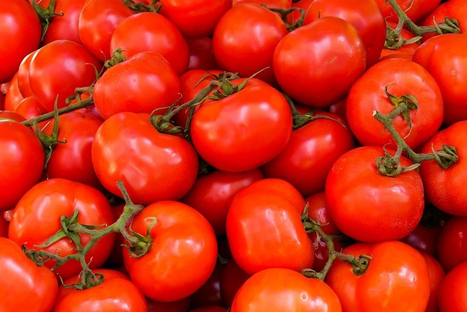
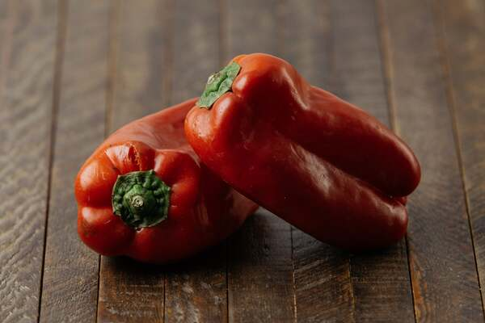
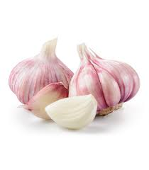
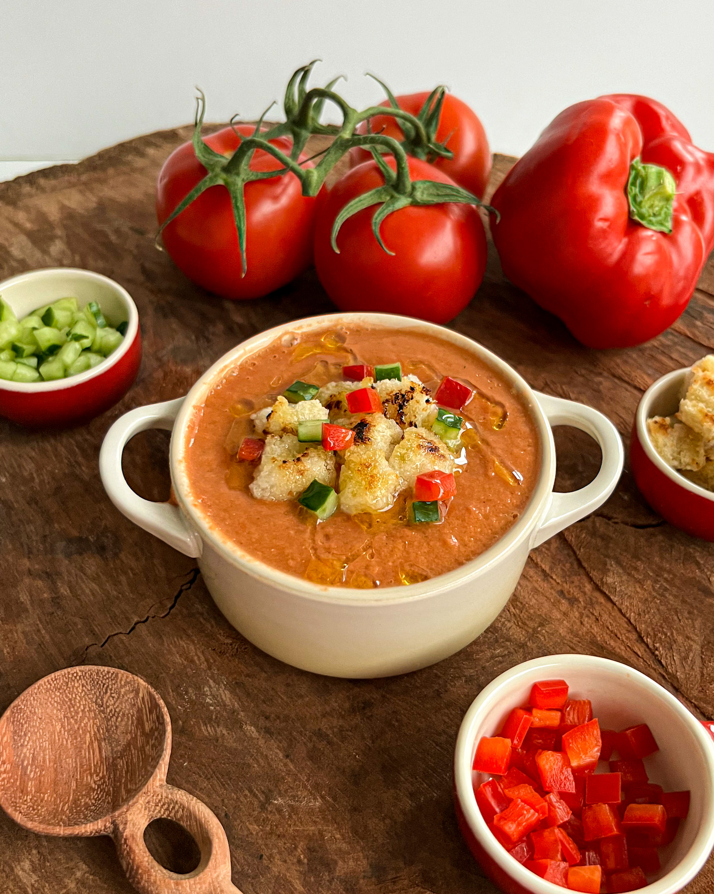

Gazpacho de Tomates Maduros
A clássica sopa fria espanhola. Uma mistura vibrante de tomates colhidos no sol, pepino e pimentões, servida gelada.
Ingredientes:
-

1 kg de tomates bem maduros (tipo Italiano ou Débora), cortados em pedaços. - 1 pepino japonês pequeno, descascado e picado.
-

1 pimentão vermelho médio (sem sementes e sem a parte branca interna). -
 1/2 cebola roxa pequena.
1/2 cebola roxa pequena.
-

1 dente de alho (sem o germe central). - 2 colheres de sopa de vinagre de xerez (ou vinagre de maçã).
-
 1/2 xícara de azeite de oliva extra virgem de excelente qualidade.
1/2 xícara de azeite de oliva extra virgem de excelente qualidade.
-
 Sal marinho e pimenta-do-reino a gosto.
Sal marinho e pimenta-do-reino a gosto.
- Opcional: Uma fatia de pão artesanal amanhecido (sem casca) para dar mais corpo (tradicional), ou use 1/2 maçã sem casca para uma versão sem glúten e mais leve.

Modo de Preparo
- Em uma tigela grande, misture todos os vegetais picados com o sal, o vinagre e o azeite. Deixe descansar na geladeira por pelo menos 2 horas (ou de um dia para o outro). Isso faz com que os vegetais soltem seus próprios sucos e os sabores se fundam antes de bater.
- Coloque a mistura no liquidificador e bata na velocidade máxima até obter um creme bem homogêneo.
- Para uma textura aveludada e elegante, passe a mistura por uma peneira fina (ou um chinoir), pressionando com uma colher. Descarte as sementes e fibras que sobrarem. O resultado deve ser um líquido vibrante e sedoso.
- O Gazpacho deve ser servido bem gelado. Deixe na geladeira até o momento de servir. Se estiver com pressa, bata um ou dois cubos de gelo junto com os vegetais.